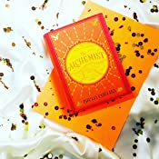
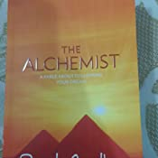
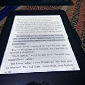

‘His books have had a life-enhancing impact on millions of people.’ THE TIMES
‘One of the few to deserve the term Publishing Phenomenon.’ INDEPENDENT ON SUNDAY
‘I love The Alchemist.’ OPRAH WINFREY
‘The Alchemist is a beautiful book about magic, dreams and the treasures we seek elsewhere and then find on our doorstep.’ MADONNA
"I feel like the luckiest man on the planet. It's a dream come true for me," to be able to direct and star and bring Coelho's book to the screen." LAURENCE FISHBURNE on the upcoming film adaptation of The Alchemist
"One of my favourite books is The Alchemist by Paulo Coelho, and I just believe that…I can create whatever I want to create. If I can put my head on it right, study it, learn the patterns…I feel very strongly that we are who we choose to be." WILL SMITH
"When I'm on the set with young actors and sometimes you meet people in life who you feel they are a little confused and they want to be re-centered, there are two books that I always recommend. One of them is Siddhartha, and the other is The Alchemist. RUSSELL CROWE
About the Author
Paulo Coelho was born in Brazil and has become one of the most widely read and loved authors in the world. Especially renowned for the Alchemist and Eleven Minutes, he has sold more than 115 million copies worldwide and been translated into over 71 languages. The recipient of numerous prestigious international awards, including the Crystal Award by the World Economic Forum and France’s Legion d’Honneur, Paulo Coelho was inducted into the Brazilian Academy of Letters in 2002.

Book View

Front Side Of Book

Pages Of Book